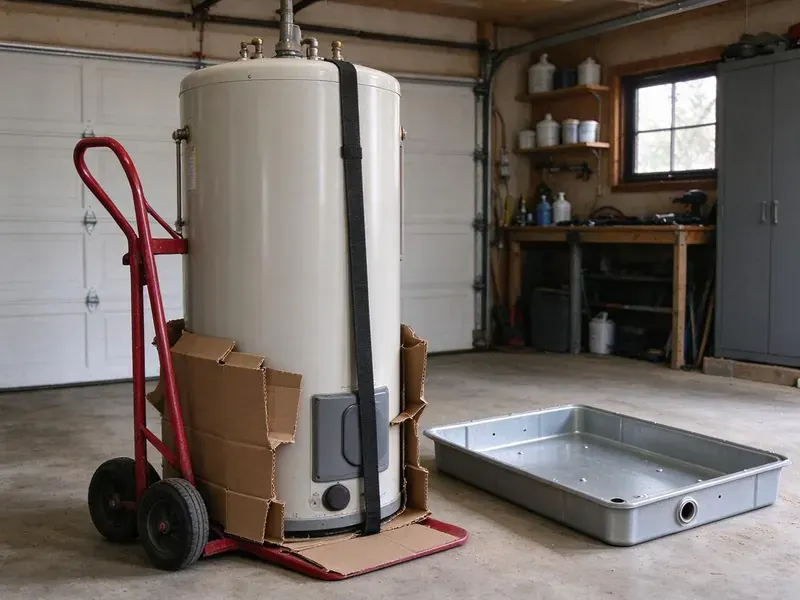

Sewage Ejector Pump Installation in Peabody, MA
Alarm going off on the pit? BWM Plumbing installs and replaces sewage ejector pumps in Peabody, MA, with same-day pump swaps when we can.
- Grinder Systems Available
- Licensed Massachusetts Plumbers
- Tidy Basement When Done
- Price in Writing

Ejector Pump Installation by BWM Plumbing in Peabody, MA
A tech looks at the pit, discharge and vent before giving a number.
Basement Bathroom Pumps in Peabody, MA
BWM Plumbing installs ejector systems across Massachusetts for homes and businesses with plumbing below the sewer. The pump lifts waste up to the building drain, which then flows by gravity to the public sewer or to a septic tank. The pump has to match the job. An undersized pump strains and an oversized one short-cycles, and both wear out sooner than they should.
Some of what we do:
- Sealed basins with gas-tight lids and their own vent
- High water alarms, audible or Wi-Fi
- Zoeller and Liberty ejector pump installs

Additional Plumbing Installation Services in Peabody, MA
We install water heaters, pumps, lines, and fixtures across Peabody, MA with precision workmanship that meets every local code.


Customers
Why Choose BWM Plumbing for Sewage Ejector Pump Installation in Peabody, MA?
Installing pumps in Massachusetts homes means dealing with whatever is under the slab, from rock to wet clay. Tree roots and shifting fill around old clay or cast iron sewer laterals are a common cause of backups in established neighborhoods. We plan the dig for that. Basins get bedded and backfilled so they cannot float or shift, and the floor gets patched with concrete over a vapor barrier rather than left as a loose cover.
- Sealed System, Gaskets at every penetration stop odors.
- Right Pump, Ejector, grinder or upflush, matched to the job.
- Alarm Protection, A high water alarm warns you before a backup.
Citywide Coverage
Distance in Peabody is not a problem for us. Grouping calls by neighborhood keeps drive time low, and that is a big reason we can often reach a failed pump the day you call. Ask for a time window.
Experienced Team
Our team reads the pump curve, not a rule of thumb. Vertical lift, horizontal run, the number of fittings and the size of the discharge pipe all change how many gallons per minute a pump delivers, and a pump picked off the shelf without that math tends to short-cycle or struggle. We do the numbers.
Safety-First Approach
Safety and code compliance begin at the basin lid on every ejector install we do in Peabody. Because sewage basins produce methane and hydrogen sulfide, we gasket every penetration, vent the basin to the roof and tie the vent in where code permits. Odors stay in the pipe.
Trusted Certified Peabody Plumbing Services Professionals
At BWM Plumbing, we are proud to offer certified plumbing services throughout Peabody, MA. Those papers on the wall mean something. Our plumbers hold recognized industry credentials, and they follow strict safety and quality rules on every repair, installation and maintenance call we run.
Call Us Now PHCC Plumbing Contractor Recognition
PHCC Plumbing Contractor Recognition Better Business Bureau (BBB) Accreditation
Better Business Bureau (BBB) Accreditation Angi Certified Pro
Angi Certified Pro ISO 9001 Quality Management Certification
ISO 9001 Quality Management CertificationSewage Ejector Pump Work in Peabody, MA
Sewage Ejector Pump Basin & Pit Installation in Peabody
Digging the pit starts with a saw cut through the floor, deep enough to set the basin flush with the finished floor. Tree roots and shifting fill around old clay or cast iron sewer laterals are a common cause of backups in established neighborhoods. We bed the basin on gravel and backfill around it so it cannot float when groundwater rises, then pour new concrete to seal the floor and lock the basin in place. A floating basin breaks pipe.

Commercial Sewage Ejector Pump Installation in Peabody, MA
Businesses in Peabody, MA with restrooms, kitchens or break rooms below grade need ejector systems that keep up with heavier, steadier use than a house. A duplex system with an alternating panel is common, so if one pump fails the other keeps things running. Closed restrooms cost business. Each pump can carry the load alone.
New Construction Sewage Ejector Pump Installation in Peabody, MA
On a new build, we set the basin ahead of the slab pour. That is the cheapest time, since there is no concrete to cut, and we stub the drains, the vent and the discharge to the plans so the rough-in inspection goes smoothly. Builders like the timing.
Emergency Sewage Ejector Pump Replacement in Peabody
An ejector failure often starts with the high water alarm, followed by slow drains and a smell near the pit. Stop all use of the basement fixtures and call, because once a plumber is on site most emergency replacements take just a few hours. We carry common pumps.
Basement Bathroom Ejector Systems in Peabody
Basement bathrooms sit below the building sewer, so every fixture drains to a sealed pit instead of flowing by gravity. We cut the slab, trench the drain lines to the basin, set it, run a two-inch vent up through the house to the roof and pipe the discharge to the building drain with a check valve and shutoff. Then we patch the concrete.
Sewage Ejector Pump Basin Installation in Peabody, MA
The basin is where the system lives, and a 30-gallon size is common for a single basement bathroom. A larger basin means longer, less frequent cycles that spare the motor and switch, so we go bigger when the pit takes a laundry or several fixtures. Every lid gets sealed.
Emergency Ejector Pump Replacement in Peabody, MA
A dead ejector pump takes every below-grade fixture out of service until it is fixed. Quit using the basement fixtures and the washer if it feeds the pit, then call (857) 335-4894 and we aim to have a plumber and pump at your door the same day. Most swaps take a few hours.

Residential Sewage Ejector Pump Installation in Peabody
Residential ejector systems in Peabody serve basement bathrooms, lower-level suites and any fixture that sits too low to drain by gravity to the sewer. The setup is a sealed basin, a pump, a float switch, a check valve and a vent. The parts are simple. Most problems come from the install, not the hardware, so we take our time on the vent and the lid seal.
Ejector Pump Installers Near You in Peabody, MA
Planning a basement bathroom? Set up a no-cost walk-through with our local crew. We find the building drain, check the vent path to the roof, look at the floor where the basin would go and then put a written price in your hands before we leave the house. The number is in writing. Most visits take under an hour.
Our crews install ejector systems in Peabody most weeks of the year, so we have seen most local basement layouts. Walkout basements on sloped lots, full basements with the sewer leaving high on the wall and older homes with a basement toilet that was never pumped each need their own approach, and knowing that ahead of time keeps the job on schedule. That cuts down on surprises.
BWM Plumbing at a Glance
- Licensed and insured plumbers serving Peabody, MA
- 24/7 emergency service with same-day scheduling
- Clear written estimates, no hidden fees
- 4.9-star rated by 434+ Massachusetts customers
Peabody Map
Peabody Information
- Population
- 54,056
- Area codes
- 978/339/781
- Service area
- Peabody and communities within 40 miles
- Nearby
- Lynn, Revere, Malden, Everett
Any toilet, shower or sink that sits below the sewer line needs a sealed basin and an ejector pump to lift waste up and out of your Peabody, MA home.
Expert Services
Call BWM Plumbing for honest, reliable plumbing from people who know the trade in Peabody, MA.
Our Specialized Plumbing Services in Peabody, MA
At BWM Plumbing, we handle the full list of plumbing services across Peabody, MA. From leak detection to full system installs, our team works fast and charges fair prices on homes and commercial properties alike. Take a look at our core services below:


What to Expect From an Ejector Pump Install in Peabody, MA
A written quote comes first, then the work starts in Peabody, MA.
In-Home Estimate
Call (857) 335-4894 to set up an estimate. We size the pump and price the job in writing.
Install the System
We install the basin, pump, check valve, shutoff and vent. We patch the slab after the inspector signs off.
Test and Inspect
We run the system through several cycles and test the alarm. Then the inspector signs off.
Frequently Asked Questions About Sewage Ejector Pump Installation in Peabody
Replacing a pump in an existing basin usually costs $900 to $2,000. A new system with basin, venting and floor work usually starts higher.
We warranty our labor with a written guarantee, and the pump carries the manufacturer's warranty. Terms are spelled out on the quote.
Constant running, a pump that never starts, grinding or humming, alarms that keep tripping and sewage odor near the basin. Once a pump passes 7 to 10 years and shows those signs, replacing it beats cleaning up a backup. Age is a clue.
We advise against it. The job involves plumbing, electrical, venting and often concrete work, and a mistake on any of them can mean sewer gas in the house, a backup or a failed inspection that has to be torn out and redone. Permits usually require a pro.
Once a year is a good habit. We check the float, test the alarm, look at the check valve and pull anything that should not be in the basin, like wipes or grease. Busy systems may need more.
Usually, yes. A new ejector system needs a plumbing permit and an inspection of the basin, vent and discharge before the floor is closed. The permit is on us.
A pump that runs nonstop, a sounding alarm, sewage odor, gurgling drains and slow drainage. Act fast to avoid a backup.
An ejector handles solid waste and wastewater from fixtures below the sewer line, like toilets and sinks. A sump pump only handles groundwater.
What People Are Saying About Our Plumbing Experts?

Paul B.
Our pit pump ran nonstop even in dry weather. The plumber found the check valve was stuck open, so the same water kept cycling back into the pit. New valve, new float switch, done in an hour. It runs quiet now.
Sump Pump · Somerville, MA
Nathan E.
Our tankless heater kept throwing an error code and shutting off mid shower. The tech flushed the heat exchanger, which was full of scale, and replaced a bad flow sensor. Hot water has been steady for half a year now.
Water Heater Repair · Lynn, MA
Lisa C.
Water was pouring out from under the washing machine on a holiday weekend. BWM Plumbing talked me through closing the valves over the phone and had a plumber at the house within ninety minutes. It was a burst fill hose.
Emergency Plumbing · Revere, MA
James P.
Our restaurant had a slow leak at the hand sink that was rotting the cabinet base. BWM Plumbing came in at six in the morning before prep, replaced the trap and both supply lines, and was packed up before my first cook clocked in.
Commercial Plumbing · Revere, MA
Monica A.
Our water bill nearly doubled in one month with no change in how we used water. The tech checked the meter, heard the leak under the hallway with his equipment, and opened a hole about a foot square. Fixed the same day.
Slab Leak Repair · Medford, MACarlos V.
Our house still had galvanized pipe, and upstairs the shower was a trickle. The crew repiped everything in PEX over three days and patched every drywall hole before they left. The pressure difference is night and day.
Repiping · Everett, MA